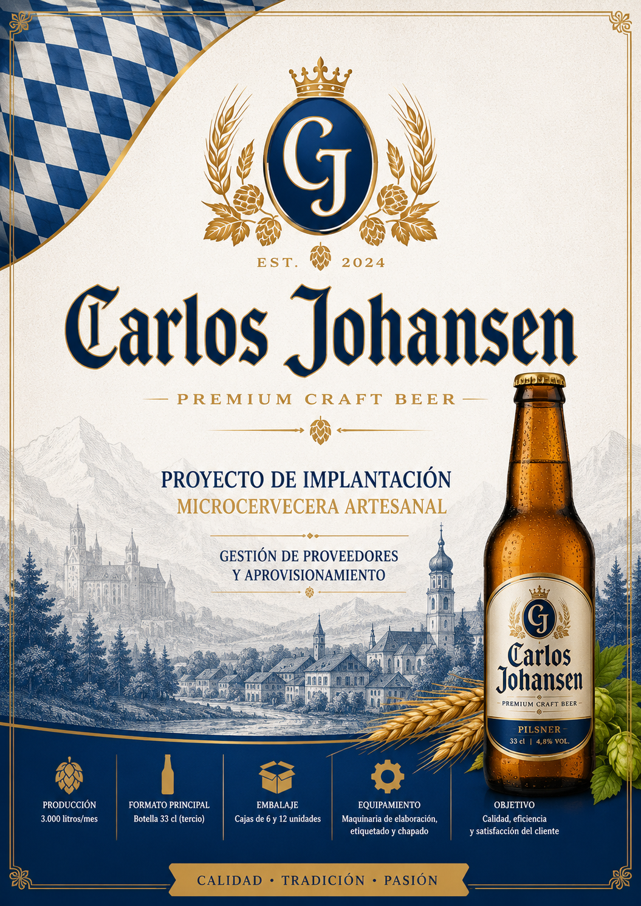
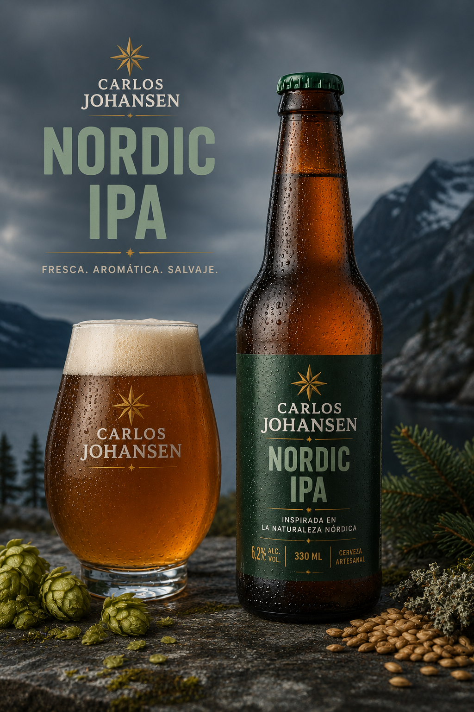
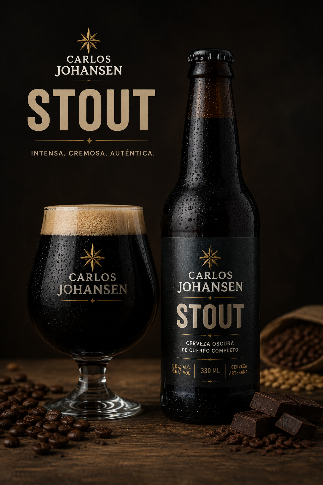

Golden Lager
Cerveza suave y refrescante con notas maltosas y un acabado limpio.
Elaboramos cerveza artesanal inspirada en la tradición europea, combinando ingredientes seleccionados y un proceso cuidado para ofrecer una experiencia auténtica.
Descubrir cervezasCarlos Johansen nace como una microcervecera artesanal enfocada en la producción de cerveza de calidad en formato de 33 cl.
Inspirados en las cervecerías centroeuropeas y en la cultura artesanal moderna, buscamos ofrecer un producto elegante, equilibrado y con personalidad propia.
Nuestra producción está diseñada para mantener un alto control de calidad, apostando por ingredientes seleccionados y procesos eficientes de elaboración y embotellado.


Cerveza suave y refrescante con notas maltosas y un acabado limpio.

Perfil aromático intenso con presencia de lúpulo y un carácter moderno.

Cerveza oscura con notas tostadas, café y cacao.
Utilizamos ingredientes cuidadosamente seleccionados.
Proceso artesanal controlado para mantener la calidad.
Sistema automatizado de etiquetado y chapado.
Embalaje profesional preparado para transporte seguro.
Carlos Johansen – Cerveza Artesanal
Polígono Industrial A Granxa, Parcela 18
36400 O Porriño – Pontevedra
contacto@carlosjohansen.com
+34 986 000 000